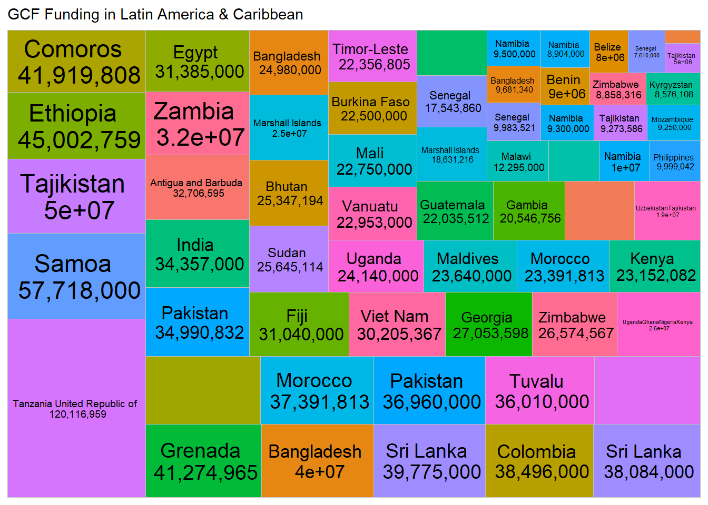

Chapter 6 Generate Other Graphics
6.0.1 A bar chart
- Open a new code chunk
- Install packages plotly & dplyr
- Call their respective libraries
- To plot the no of projects per region, first group your data by region, then count the no of projects (use a unique identifier, in our case the project ID)
- Call the function ‘plot_ly’ and enter parameters as in below
gcf %>% group_by(Region)%>% count(gcf$`Project Name`)%>%
summarise("Projects"=sum(n))%>% plot_ly(type = "bar",
y = ~Projects, x = ~Region
) %>%
plotly::layout(yaxis=list(title='No. of Projects',tickfont=list(size=20)),
xaxis=list(title='Region', tickfont=list(size=20)))6.0.2 A donut chart
To plot the same data as above but on a pie chart, the process the same, only the type of chart changes
gcf%>%group_by(Region)%>%summarise('Total'=sum(`Total GCF Funding`))%>%plot_ly(labels=~Region, values=~Total,sep = '\n')%>% add_pie(hole=0.5)%>%
layout(title="GCF Funding by Region")6.1 Filter and plot select data
6.1.1 Pie chart
To plot projects for a select region (s), use the filter function to select only values that match your selection, then group the data by country and create count by unique identifier as above. Repeat the plotting steps as above. you may use any type of charts as may be preferred.
gcf%>%filter(Region=="Asia-Pacific")%>%
group_by(countryname)%>%count(`Project Name`)%>%
plot_ly(labels=~countryname, values=~n)%>%
add_pie()%>%
layout(title=" GCF Projects in Asia-Pacific",
legend=list(orientation='h'))6.1.2 Build Treemap
6.1.2.1 Static
- Open a new code chunk
- Install packages ggplot2 & treemapify
- Call the respective libraries
- To plot amount of grant in Region x, filter values for only that region, then summarise the data by country using the functions ‘group-by’ and ‘sum’
- Call the function ‘ggplot’ and enter parameters as shown in screenshot above
- Run code
ggplot(gcf, aes(fill=countryname,
area=gcf$`Total GCF Funding`,
label = paste(countryname,"\n",prettyNum(`Total GCF Funding`,
big.mark = ","))))+
geom_treemap()+
geom_treemap_text(colour='black', place='centre')+
labs(subtitle = 'GCF Funding in Latin America & Caribbean')+
theme(legend.position = 'none')
6.1.2.2 Interactive
gcf_sum<-gcf%>%filter(Region=="Africa")%>%
group_by(countryname, Region)%>%summarise("Total"=sum(`Total GCF Funding`))
plot_ly(
data = gcf_sum,
type= "treemap",
values = ~Total,
labels= ~countryname,
parents= ~Region,
name = "GCF Funding",
textinfo="label+value+percent parent")